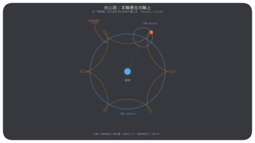
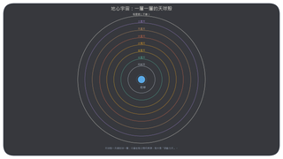
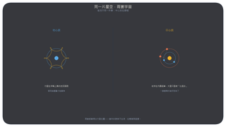
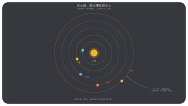
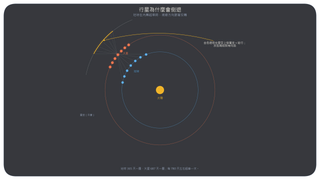
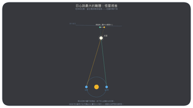
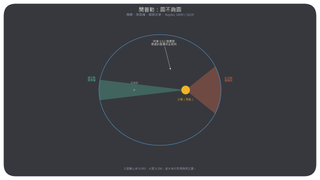
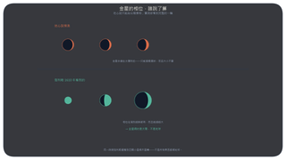
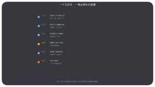

本課程用 Digitalis 流動球幕系統，重演人類如何從「大地是宇宙中心」的直覺，走到「太陽只是恒星之一」。全場純播放約 8 分鐘，加上講解約 15 分鐘。
開場可以先問觀眾：昨天晚上，星星為什麼會移動？
以下參數可在 .sts 檔裡直接改：
· 觀測地點：各腳本中 lat 22.30 lon 114.17 為香港，請改成你的城市。
· 示意圖位置：altitude 42 azimuth 180 是焦點方向正前方；若投影機焦點軸向不同，調整 azimuth。
· 快轉速度：timerate rate 的倍數，播放卡頓就調低。
· 逆行演示日期：火星 2027-02-19 衝，逆行約 2026-12-30 至 2027-03-11；過了這個窗口要改 date utc 與步數。
從地球看，整個星空像一個球殼，繞著同一個點轉。恒星彼此的相對位置一夜之間、甚至幾百年間都不變——古代人把它叫做「恒星天」。
你覺得是天空在轉，還是我們在轉？ 當年沒有任何感官證據說是地球在轉。地心說不是愚蠢，它是五官的直接結論。
行星在希臘文裡叫 planetes，「漫遊者」。它們大致沿黃道向東走，但每隔一段時間會停住、倒退、再繼續——這叫逆行。
本幕用「恆星日步進」：每一步天空回到原位，只剩行星相對恒星的移動。盯著火星，它會倒退約兩個多月（取 2027-02-19 衝日前后）。
如果所有天體都繞地球轉圈，倒退要怎麼解釋？
西元 150 年，托勒密用「圓套圓」：行星在小圓（本輪）上轉，小圓的中心又沿大圓（均輪）繞地球轉。行星靠近地球時走反向，就折疊出倒退的視覺。
這個模型誤差約 1–2°，能用來預報行星位置，用了 1400 年。本幕後半展示完整的地心宇宙：月球天、水星天……一直到不動的恒星期，一層一層的天球殼。提醒觀眾：被取代的模型往往是被更簡潔的解釋取代，不是因為它算不准。


開場先並排兩套宇宙：同一片星空，差別只在中心放在哪裡。1543 年，哥白尼把中心從地球搬到太陽，逆行不再是行星的怪癖，而是內圈地球超車時的視角錯覺。
本幕飛到太陽北極上方約 4 天文單位俯視整個行星系統，快轉看地球超前火星；再疊加逆行幾何示意圖。
誠實提示：哥白尼的模型仍然用正圓，預報精度并沒有立刻超過托勒密。它先贏在簡潔，不是贏在准。而且當時有個誰都答不了的質疑——地球在動，為什麼看不到恒星視差？（1838 年才量到 0.3 角秒）




第谷留下 20 年、精度 1–2 角分的裸眼觀測。開普勒用火星數據比對圓軌道，差了 8 角分——他選擇相信數據，改用橢圓。
本幕看水星（離心率 0.206）快轉：近日點明顯加速；再疊加等面積示意圖。

1610 年，伽利略看到四顆小星繞木星轉——不是所有東西都繞地球；又看到金星有完整相位、越細越大——它繞的是太陽。這是望遠鏡給出的第一批「裁判證據」。
最后用時間線收束：托勒密 → 哥白尼 → 第谷 → 開普勒 → 伽利略 → 牛頓。


太陽也不是不動的中心。它帶著整個行星系統繞銀河系中心轉，2.3 億年一圈。
那到底有沒有一個「不動的中心」？ 科學不是換掉一個答案，是換掉一個問問題的位置。
腳本與示意圖以 CC BY 4.0 授權釋出，可自由修改與再散布，請保留出處。示意圖由腳本生成（build/make_images.py），非等比例，僅作示意；逆行幾何圖按地球 365 天、火星 687 天的周期關系計算繪制。
StratoScript 是 Digitalis Education Solutions, Inc. 的商標；本課程適配 Nightshade G3 24.4.x，亦兼容 Nightshade NG 21.7.x（未使用 G3 專屬的分類學 set 指令）。
| 作者 | 卓越策劃科技 × WorkBuddy |
| 示意圖 | 自製（CC BY 4.0） |
| 模擬引擎 | Nightshade G3 24.4 |